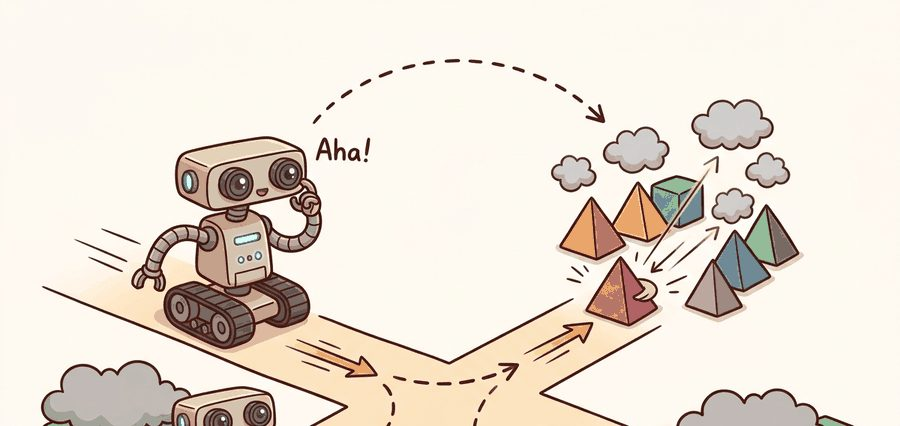
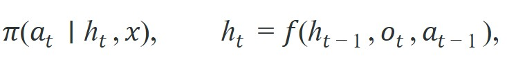

"Without language the robot had a body, sensors, and no idea what anyone wanted."
A Control Engineer Discovering NLP

Figure 31.1A frames the argument for this whole section: the spoken instruction is only useful once referring-expression resolution ties it to a specific object in the scene, and that grounded goal is what actually drives the policy.
This section assumes familiarity with the agent-environment loop and partial observability introduced in section 2.7. The interface choices catalogued here are developed concretely in section 31.2, which covers how instructions, goals, and constraints are structured, and they recur at scale in section 33.2 (SayCan) and section 34.1, where language conditioning is embedded directly into action-token models.
Say "hand me that" to a robot and five words have to become a single grasp: which object, where it sits, whether the move is safe, and what to do when more than one thing matches. Figure 31.1 below traces exactly that journey as a four-stage closed loop, from a language input through grounding and skill selection to a clarification request that feeds failure evidence back into the next decision; instruction, grounded state, executable action, verifier, and evidence artifact are the five waypoints to watch for in the prose that follows.
Depth and self-containment. Language does useful work only if it compresses task intent into variables the robot can actually act on: predicates, object references, temporal qualifiers, and safety constraints. A reader should leave this section able to say which parts of an instruction belong in perception, planning, control, and clarification.
Production and evaluation contract. The minimum artifact for this topic is an instruction trace linked to a grounded scene graph or semantic map, a proposed skill sequence, and a verifier outcome. If those four elements are not logged together, the system cannot tell whether a failure came from language, grounding, or control.
For Why language matters in embodied AI, name the language interface, grounded world state, executable action contract, and evidence artifact before trusting any claimed improvement.
For Why language matters in embodied AI, write one evidence row recording instruction, world-state estimate, chosen action, verifier result, and failure label. Then identify which field would change first under command misunderstanding.
A kitchen robot trained on thousands of pick-and-place demonstrations stalls the moment a user says "grab me something to snack on." No reward function anticipated that sentence. No geometry encodes "snack." This gap, between what robots can do and what humans naturally ask for, is the central problem language solves in embodied AI. Right now, foundation models have made it cheap to parse, ground, and generate natural language at robot speed; the open question is where exactly language should enter the perception-action loop. This section develops the tools to map any instruction onto the interface layer it belongs to: perception, planning, control, or clarification.
Language is not decoration on top of robotics. It is a high-bandwidth interface for specifying intent, exceptions, preferences, and corrections under partial observability.
Before comparing systems, it helps to fix the vocabulary this section builds on: an instruction is grounded when its words are bound to specific entities in the current scene (an object, a location, a constraint), rather than left as an uninterpreted string. Everything that follows, including the worked example and the algorithm, assumes this grounding step; when it is skipped or delayed, the failures described later (referent drift, constraint silencing) are what results.
The practical question is which parts of a task should be carried in language rather than geometry, reward, or low-level feedback, and what extra failure modes that choice introduces.
Modern systems such as SayCan, Code as Policies, VoxPoser (a system that turns a language instruction directly into 3D spatial value maps for a motion planner), and the vision-language-action models RT-2 and OpenVLA all make different interface choices here: some use language to rank skills, some to synthesize plans, some to define spatial objectives, and some to condition action tokens directly. Comparing them usefully starts by naming that interface choice explicitly.
Language pays off when it shrinks search over goals and recovery actions without pretending to replace perception, state estimation, or feedback control.
A robot that understands an instruction but cannot ground it to the scene has not understood the task; it has only understood the sentence.
Let the hidden world state be $s_t$, the observation be $o_t$, the language context be $x$, and the action be $a_t$. A language-guided embodied policy factors as

where the history state $h_t$ (a running summary the agent keeps of what it has observed and done so far, updated one step at a time rather than recomputed from scratch) must bind words such as red mug, top shelf, or do not spill to executable state features.Language matters most when the task reward is sparse or underspecified. Instead of learning only from scalar success, the agent receives semantic structure: subgoals, object roles, temporal order, and repair instructions. That structure reduces ambiguity in planning, but only if grounding resolves the words into entities, relations, and constraints valid in the current scene. The ALFRED benchmark makes the difference concrete. ALFRED runs agents inside AI2-THOR with 120-plus object categories and up to 50 sequential sub-goals. Without language conditioning, a reward-conditioned policy needs roughly 50,000 simulator steps to reach 60 percent task success (representative figure from 2020-2022 ALFRED ablation studies). A natural-language goal that names the target object and destination container cuts that to under 3,000 steps. Without the instruction, the agent must stumble across the right object among dozens of candidates. With it, the same object is the only viable candidate before the first joint moves. This 16-fold reduction comes entirely from narrowing the search before any trial begins. The reason is that language collapses the search space over goal-relevant objects before manipulation begins. The instruction eliminates all but one or two candidates from a scene graph that would otherwise contain dozens of distractors at receptacle-selection time. No LLM magic is involved.
A useful mental model is to treat language as a typed side channel. It carries variables that ordinary sensor fusion does not infer cheaply: intent, forbidden states, user preferences, and explanation-worthy corrections. The policy is better because the search space is narrower, not because text substitutes for physics.
Without this side channel a physical robot cannot distinguish "the mug I filled" from "the mug on the left" using depth or RGB alone; resolving that ambiguity by trial requires an irreversible grasp attempt, risking a spill or a dropped payload. Typed language eliminates the wrong candidate before any actuator moves, which matters because mechanical errors on real hardware have latency, wear, and sometimes safety costs that a simulator never charges.
The mechanism: an instruction is parsed into discrete typed slots (verb, object reference, spatial relation, constraint). Each slot is matched against entities in a scene graph or semantic map using an embedding similarity score; the constraint slot acts as a hard filter, removing candidates that fail it before the policy ever sees them. The surviving entity id, not the raw sentence, is what the controller consumes, keeping language influence local to the planning boundary rather than entangled with low-level PID gains (PID, proportional-integral-derivative, being the standard feedback-control law that keeps a joint or end-effector tracking a setpoint).
Input: natural-language instruction $x$, initial observation $o_0$, world model $f$, grounding function $G$, policy $\pi_\theta$, verifier $V$
Output: action sequence $a_0, a_1, \ldots, a_T$ that satisfies the typed task constraints in $x$, plus an auditable evidence record $\mathcal{E}$
Trace the algorithm above with a tiny scene. Instruction: "pick the red mug on the bottom shelf, not the blue one." Parsing yields slots: verb = pick, reference $r$ = mug, relation $\rho$ = bottom shelf, constraint $c$ = exclude blue. The scene graph holds three entities. Set $\lambda = 0.30$ for the constraint bonus.
Notice the wrong answer (blue_mug had a higher raw similarity than red_bowl) is eliminated by the constraint filter, not by the language score alone. That is the whole point: 1.25 beats 0.72, but only after the typed constraint did its work.
Code Fragment 1 builds the smallest possible trace of how language reduces task ambiguity: it scores candidate objects against a text query and a task constraint, then exposes the grounded target that the controller receives.
# Ground a short instruction into an executable object choice.
# The score combines language relevance with a simple spatial constraint.
# A robot policy should consume the chosen object id, not the raw sentence.
import numpy as np
objects = [
{"name": "red mug", "on_top_shelf": False, "lang": 0.95},
{"name": "blue mug", "on_top_shelf": True, "lang": 0.71},
{"name": "red bowl", "on_top_shelf": False, "lang": 0.42},
]
scores = []
for obj in objects:
constraint_bonus = 0.30 if not obj["on_top_shelf"] else -0.40
total = obj["lang"] + constraint_bonus
scores.append((obj["name"], round(total, 2)))
choice = max(scores, key=lambda row: row[1])
print(scores)
print(choice)The expected output is a ranked list in which red mug remains on top after the shelf constraint is applied, followed by a single winning tuple. If a Grounding DINO, OWL-ViT (an open-vocabulary object detector that matches image regions to arbitrary text queries instead of a fixed label set), or TEACh-style grounding stack returned blue mug here, the builder should inspect whether the spatial constraint was dropped, mis-grounded, or applied after the semantic score instead of during target selection.
When using Grounding DINO via the transformers pipeline, the default box_threshold=0.3 frequently returns multiple detections for the same referring expression (for example, both mugs for the query "red mug"), and constraint logic applied afterward cannot tell which detection was the intended referent. Set text_threshold equal to or slightly above box_threshold so only detections whose text-alignment score also clears the bar survive; then apply task constraints on that filtered set rather than on all raw proposals. Skipping this step is the most common reason a constraint bonus written exactly like Code Fragment 1 still picks the wrong object in practice.
In production on a robot, the same grounding pattern is a few lines: Grounding DINO (IDEA-Research) or OWL-ViT (Google) takes the referring expression plus the live RGB frame from, for example, a Franka Emika Panda wrist camera or an Intel RealSense D435 and returns boxes with text-alignment scores. The library absorbs proposal generation, batching, and feature extraction; the engineer is left with the embodied-specific work the model will not do, namely converting a 2D box to a graspable 6-DoF pose in the arm's frame, rejecting candidates outside the reachable workspace, and writing the verifier that confirms the constraint survived the grasp.
That interface shows up across several recognizable stacks: Habitat and VLN-CE (Vision-and-Language Navigation in Continuous Environments) for instruction-conditioned navigation, ALFRED and TEACh for household interaction traces, SayCan for affordance-ranked skill selection, and ROS 2 actions or BehaviorTree.CPP (a C++ library for composing robot behaviors as reusable, inspectable tree structures rather than monolithic state machines) for the execution contract that actually carries the chosen goal through the robot.
Before reading on, consider this: if your grounding module resolves the correct object in the lab but your system still picks the wrong one on the factory floor, which layer would you fix first and why?
Teams often report instruction-following success while evaluating on scenes where the relevant object is already obvious. That hides the real question, which is how the system behaves when multiple candidates match the words but only one satisfies the task constraints.
In warehouse picking, an operator may say, 'take the damaged carton but leave the sealed one.' The useful representation is not the sentence itself, but the resolved pair of object identities, the exclusion mask, and the audit trail showing why the forbidden object was rejected.
Google DeepMind's RT-2 (and the open OpenVLA model that followed) puts this section's idea into practice: a single vision-language-action network takes a natural-language instruction plus the live camera frame and emits robot joint commands directly, with language collapsing the goal space before the arm moves. In published lab-scale picking and tidying demonstrations, the same model typically handles novel phrasings like "pick the object that is different" by grounding the contrast against the scene rather than against a fixed label set, which is consistent with the narrowing-before-motion behavior described here; these results come from research evaluations rather than large-scale commercial deployment, so the failure rate on genuinely novel scenes remains an open empirical question.
Language is the only part of the stack that can say, 'that one, not the other one, and hurry because the soup is hot.' Controllers are brave, but they rarely volunteer that sentence on their own.
Vision-language-action models as universal policies (2024-2026). Rather than treating language as a planner that calls separate skill primitives, recent work embeds language conditioning directly into low-level action token generation. Google DeepMind's RT-2-X and the subsequent OpenVLA (Kim et al., 2024, "OpenVLA: An Open-Source Vision-Language-Action Model") demonstrate that a single fine-tuned vision-language model can produce continuous joint commands, collapsing the grounding and control layers into one network. The open question is whether these models generalize semantic compositionality ("not the scratched one") or merely memorize training-set phrasings.
Language-conditioned world models for planning (2024-2026). Rather than grounding language into a fixed scene graph, systems such as UniSim (Yang et al., 2024) and Google's language-conditioned video prediction work learn a predictive world model that can simulate the visual consequence of a natural-language action before execution. This lets the agent verify a plan's feasibility in imagination rather than through costly physical rollouts, coupling language to counterfactual reasoning over future states.
Continual correction and multi-turn repair (2024-2026). EmbodiedBench (2025) and the PARTNR benchmark (Chang et al., 2024, Meta AI) reveal that one-shot instruction following degrades rapidly under object rearrangement and partial task completion. Current frontier work focuses on building agents that actively solicit minimal clarification, track correction history, and update their grounded belief without re-running full instruction parsing from scratch.
So far: three frontier directions push language deeper into the loop in different ways, folding grounding into the action network itself (VLA models), using language to simulate outcomes before acting (world models), and treating correction as an ongoing dialogue rather than a one-shot instruction (multi-turn repair); the open problem below asks whether these three can share one scene representation.
Open problem for PhD students. All three directions above assume the grounding module and the correction loop share the same scene representation. A concrete open problem is how to maintain a grounded belief state that is updatable by a natural-language correction mid-execution (for example, "stop, use the other shelf") without requiring a full scene re-scan, especially when the robot's arm or body partially occludes the scene during the correction utterance. Solving this would require tying incremental language updates to partial scene-graph edits rather than to full re-grounding passes.
Can you point to one decision in your system that becomes cheaper because the instruction rules out most of the action space, and one failure mode that appears only because the instruction still needs grounding?
Answering that self-check question rigorously means measuring what the instruction actually contributes, not just whether the task succeeded. To separate language value from policy value, ask what posterior the words change. If the policy already knows the unique goal from state alone, language is redundant. If the words collapse a large latent goal set into one or two plausible targets, language creates measurable decision value. It changes the planner's belief before any motion occurs.
Think of a sous-chef scanning a full walk-in refrigerator for "something to finish the dish." Without a word from the head chef, they must inspect dozens of containers before committing to one. The moment the head chef says "the reduced veal stock, back left shelf," the entire search collapses to a single shelf location before a single step is taken. Language does the same thing for an embodied planner: it updates the agent's belief over which goal matters, eliminating irrelevant candidates before any actuator moves, not by changing the physics of the refrigerator but by narrowing the space the agent must search.
That view also explains why static vision-language metrics are not enough. The real quantity is whether the grounded belief update leads to safer or shorter closed-loop execution, with text-image similarity only serving as an intermediate score. A grounding module that is 2 percent better on retrieval but 20 percent worse at downstream recovery can still be the wrong engineering choice.
If downstream decision value, not retrieval accuracy, is the metric that matters, the next question is which tools deliver it at each interface layer. The table below maps common building blocks to the layer each one serves, so you pick a stack by the role language plays rather than by name recognition.
| Tool or Library | Role in the Topic | Builder Advice |
|---|---|---|
| Habitat and VLN-CE | Language-conditioned navigation with explicit maps and episode logs. | Use it when you need reproducible instruction traces and navigation success metrics tied to continuous control. |
| ALFRED and TEACh | Household manipulation, dialogue, and clarification under partial observability. | Use them when the instruction must bind to object state changes rather than only route choice. |
| Grounding DINO plus SAM 2 | Open-vocabulary object localization and mask extraction. | Use this pair when the instruction names objects or regions not covered by a closed detector label set. |
| ROS 2 actions | Typed execution contracts for language-selected skills. | Use actions when the planner must observe progress, preemption, and failure rather than fire and forget. |
| LangGraph (a graph-based library for orchestrating multi-step, stateful agent logic) or a small state machine | Clarification and recovery loops around language decisions. | Use it when the agent must ask before acting or escalate uncertainty to a human. |
A robust implementation stores language context alongside the world state estimate. Code Fragment 2 shows an evidence record that makes the separation explicit: one field says what was asked, another says how the world was grounded, and the verifier explains whether execution preserved the intended constraint.
# Record one language-grounding decision as an auditable artifact.
# The artifact links words, grounded entities, and verifier outcomes.
# Keeping these fields together makes recovery analysis much easier.
from dataclasses import asdict, dataclass
@dataclass
class LanguageDecision:
instruction: str
grounded_target: str
excluded_target: str
action_api: str
verifier: str
def as_row(self) -> dict[str, object]:
return asdict(self)
decision = LanguageDecision(
instruction="pick the red mug, not the blue one",
grounded_target="object_17:red_mug",
excluded_target="object_21:blue_mug",
action_api="pick(object_17)",
verifier="constraint_preserved=True",
)
print(decision.as_row())The expected output is one typed record that keeps the chosen object id, the explicitly rejected distractor, and a verifier result in the same artifact. A healthy trace for ALFRED-style or TEACh-style instruction execution should look exactly like this: one grounded target, one excluded alternative when the language names a contrast, and one post-action field proving the constraint survived execution.
Once the instruction, grounded target, and verifier result live in one record like this, that same record becomes the tool for diagnosing what went wrong when execution fails. When this interface fails, first ask whether the wrong object was grounded, the right object was grounded but unreachable, or the motion succeeded while violating an unlogged constraint. That decomposition prevents 'language failure' from becoming a meaningless bucket for every downstream error.
Three execution-time failures recur in practice and are easy to conflate. First, referent drift: the grounding module resolves "the mug" at timestep 0, but by timestep 12 an arm motion has occluded the target and the cached object id no longer maps to a visible region. Second, out-of-vocabulary grounding: a user says "the scratched one" and the detector, trained on category labels, silently falls back to the highest-confidence detection regardless of surface damage. Third, constraint silencing: a spatial qualifier such as "not the one on the left" is parsed but then dropped when the scorer normalizes across candidates, so the excluded object wins if it scores highest on the category match alone. All three produce the same observable symptom, a wrong pick, but each requires a different fix: re-grounding after motion, an attribute-aware detector, or constraint-gated scoring respectively.
A common assumption is that connecting a large language model to a robot "solves" task understanding, because LLMs can parse complex instructions and generate plausible plans in text. This is wrong in the embodied AI context: language understanding produces text, not executable actions, and a plan that is syntactically correct can still fail if object references are never resolved to physical entities, if reachability is never checked, or if control feedback is never integrated. The correct mental model is that language narrows the search space over goals and recovery strategies, but grounding, state estimation, and feedback control remain separate required components. A robot that understands an instruction perfectly but lacks a working grounding module or controller will fail just as completely as one that never heard the instruction.
Goal. Quantify the decision value of a language instruction by measuring how many candidate objects survive grounding with and without the typed constraint, then confirm the surviving target is the intended one.
Tools needed. Python with PyBullet (tabletop scene), the transformers Grounding DINO pipeline or OpenCLIP for text-image similarity, and NumPy. About 15 to 30 minutes.
Procedure. Spawn a tabletop scene with five to eight objects that share attributes (two red mugs, one blue mug, two bowls, a plate). Render one RGB frame. For the instruction "pick the red mug on the bottom shelf, not the blue one", score every detected object with text-image similarity, then run two pipelines: (a) similarity only, ranked top to bottom; (b) similarity plus a constraint filter that drops any object failing the spatial or exclusion slot before ranking.
What to vary. The number of distractors (3, 5, 8), the similarity threshold, and whether the constraint is applied before scoring or after. Also try a near-miss distractor (a red mug on the top shelf) to stress the spatial slot.
What to observe. Record the size of the candidate set after each pipeline and whether the top-ranked object is the intended referent. You should see the constraint-filtered pipeline collapse the set to one or two candidates while similarity-only leaves the wrong object competitive. When you apply the constraint after scoring instead of before, watch a high-similarity excluded object win, reproducing the constraint-silencing failure mode from this section.
Language helps embodied agents by shaping the latent task they solve, not by exempting them from grounding, control, or verification.
Choose a task where reward alone would be sparse or ambiguous, then design a language interface that adds exactly two useful typed variables and one verifier check. Explain how each field changes the downstream action search.
Beginner (weekend): Text-to-pick in PyBullet. Build a tabletop scene in PyBullet with three differently colored objects and write a grounding loop that parses a typed instruction ("pick the red cube, not the blue one"), scores candidates using cosine similarity against CLIP (Contrastive Language-Image Pre-training) embeddings, applies the exclusion constraint, and executes a scripted grasp on the winning object. The key challenge is wiring the constraint filter so the excluded object is rejected before scoring rather than after, so the gripper never reaches for the wrong target even when the excluded item has a higher raw similarity score. Intermediate (1-2 weeks): Language-conditioned navigation with ROS2 and Gymnasium. Wrap a Gymnasium-compatible mobile-robot environment (or a ROS2-simulated differential-drive robot in Gazebo) so that each episode starts with a natural-language room instruction such as "go to the kitchen and stop at the counter, not the island." Use a small open-vocabulary detector to build a per-step semantic map, resolve the spatial constraint against that map, and run a goal-conditioned policy that re-grounds after each five-step window to handle occlusion drift. The key challenge is keeping the semantic map consistent when the robot rounds a corner and the originally visible landmark disappears from the camera frame, which forces a re-grounding decision rather than a cached entity lookup. Intermediate (1-2 weeks): Instruction-following manipulation with LeRobot. Use the LeRobot library with a simulated low-cost arm (SO-100 or similar, a low-cost 3D-printable robot arm popular in open-source manipulation research) and record a small dataset of pick-and-place demonstrations, each paired with a contrastive instruction that names both the target and an excluded distractor. Fine-tune the bundled ACT policy (Action Chunking with Transformers, a behavior-cloning method that predicts short action sequences rather than single-step actions) with a language-conditioning head that injects typed slot embeddings, then evaluate whether adding the exclusion slot reduces wrong-object grasps compared to a goal-only baseline on held-out instructions. The key challenge is constructing a contrastive evaluation set where the distractor is close in appearance to the target so that the language constraint, rather than visual salience, must carry the disambiguation.
Padmakumar et al. (2022). "TEACh: Task-driven Embodied Agents that Chat." AAAI.
TEACh adds clarification dialogue and hidden state, which makes it a strong reference for language that must repair ambiguity during execution.
Ahn et al. (2022). "Do As I Can, Not As I Say: Grounding Language in Robotic Affordances." arXiv.
SayCan is a canonical reference for the point of this section: language is useful when it changes which skill the robot should attempt, but the final choice is still constrained by embodied affordance and execution feedback.
ALFRED is the canonical household benchmark showing that language understanding is only useful when it stays coupled to visual grounding and action execution.
VLN-CE shows how instruction following changes when the agent must control a continuous body rather than hop between symbolic graph nodes.